Chapter 4 A List of Heatmaps
The main feature of ComplexHeatmap package is it supports to concatenate a list of heatmaps/annotations horizontally or vertically so that it makes it possible to visualize the associations from various sources of information. In this chapter, we mainly introduce the horizontal concatenation because this is the major case we will use in the analysis. In the end we show some examples of vertical concatenation. The concept behind basically is similar.
For the horizontal concatenation, the number of rows for all heatmaps/annotations should be the same. In following we first introduce the concatenation of heatmaps and later we will show how to concatenate heatmaps with annotations.
In following example, there are three matrices where the third heatmap is a vector and it will be transformed as a one-column matrix. The one-column heatmap is sometimes useful when you concatenate a list of heatmaps that it can show e.g. annotations for each row or some scores of each row. e.g. if rows are genes, the the whether genes are protein coding gene can be represented …, or p-values or foldchange from differnetial…
To concatenate heatmaps, simply use + operator.
set.seed(123)
mat1 = matrix(rnorm(80, 2), 8, 10)
mat1 = rbind(mat1, matrix(rnorm(40, -2), 4, 10))
rownames(mat1) = paste0("R", 1:12)
colnames(mat1) = paste0("C", 1:10)
mat2 = matrix(runif(60, max = 3, min = 1), 6, 10)
mat2 = rbind(mat2, matrix(runif(60, max = 2, min = 0), 6, 10))
rownames(mat2) = paste0("R", 1:12)
colnames(mat2) = paste0("C", 1:10)
le = sample(letters[1:3], 12, replace = TRUE)
names(le) = paste0("R", 1:12)
ind = sample(12, 12)
mat1 = mat1[ind, ]
mat2 = mat2[ind, ]
le = le[ind]
ht1 = Heatmap(mat1, name = "rnorm")
ht2 = Heatmap(mat2, name = "runif")
ht3 = Heatmap(le, name = "letters")
ht1 + ht2 + ht3
Under default mode, dendrograms from the second heatmap will be removed and row orders will be same as the first one. also row names which are put on the right side of the heatmap for hte first two heatmaps are removed as well.
The returned value of addition of two heatmaps is a HeatmapList object. Directly calling ht_list object will call draw() method with default settings. With explicitly calling draw() method, you can have more controls e.g. on the legend and titles.
ht_list = ht1 + ht2 + ht3
class(ht_list)## [1] "HeatmapList"
## attr(,"package")
## [1] "ComplexHeatmap"You can append any number of heatmaps to the heatmap list. Also you can append a heatmap list to a heatmap list.
ht1 + ht_list
ht_list + ht1
ht_list + ht_listNULL can be added to the heatmap list. It would be convinient when users want to construct a heatmap list through a for loop.
ht_list = NULL ## Heatmap(...) + NULL gives you a HeatmapList object
for(s in sth) {
ht_list = ht_list + Heatmap(...)
}4.1 Titles
A heatmap list also has titles which are independent to the heatmap titles.
col_rnorm = colorRamp2(c(-3, 0, 3), c("green", "white", "red"))
col_runif = colorRamp2(c(0, 3), c("white", "orange"))
col_letters = c("a" = "pink", "b" = "purple", "c" = "blue")
ht1 = Heatmap(mat1, name = "rnorm", col = col_rnorm,
row_title = "Heatmap 1", column_title = "Heatmap 1")
ht2 = Heatmap(mat2, name = "runif", col = col_runif,
row_title = "Heatmap 2", column_title = "Heatmap 2")
ht3 = Heatmap(le, name = "letters", col = col_letters)
ht_list = ht1 + ht2 + ht3
draw(ht_list, row_title = "Three heatmaps, row title", row_title_gp = gpar(col = "red"),
column_title = "Three heatmaps, column title", column_title_gp = gpar(fontsize = 16))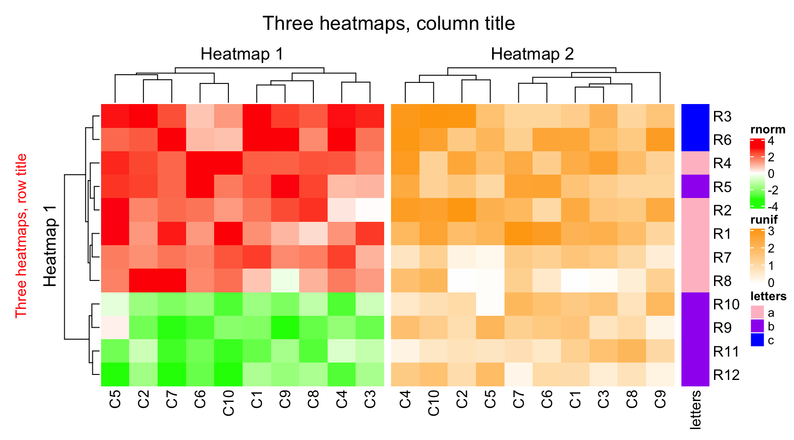
4.2 Size of heatmaps
The width for some (not all) heatmaps can be set to a fixed width.
ht2 = Heatmap(mat2, name = "runif", col = col_runif, width = unit(4, "cm"))
ht3 = Heatmap(le, name = "letters", col = col_letters, width = unit(5, "mm"))
ht1 + ht2 + ht3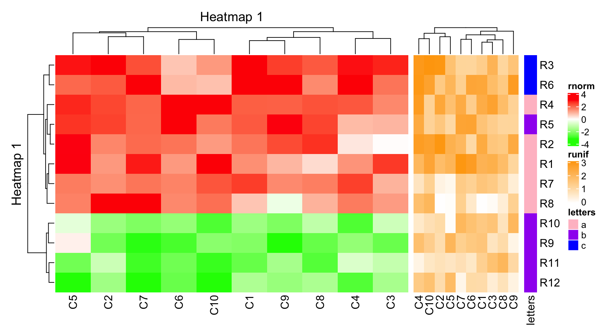
or the width can be set as relative values. Please not in this case, width for all heatmaps should be set (relative width and fixed width can be mixed).
ht1 = Heatmap(mat1, name = "rnorm", col = col_rnorm, width = unit(4, "cm"))
ht2 = Heatmap(mat2, name = "runif", col = col_runif, width = unit(6, "cm"))
ht3 = Heatmap(le, name = "letters", col = col_letters, width = unit(1, "cm"))
ht1 + ht2 + ht3
ht1 = Heatmap(mat1, name = "rnorm", col = col_rnorm,
show_row_names = FALSE, width = 6)
ht2 = Heatmap(mat2, name = "runif", col = col_runif,
show_row_names = FALSE, width = 4)
ht3 = Heatmap(le, name = "letters", col = col_letters, width = 1)
ht1 + ht2 + ht3
4.3 Gap between heatmaps
ht1 = Heatmap(mat1, name = "rnorm", col = col_rnorm)
ht2 = Heatmap(mat2, name = "runif", col = col_runif)
ht3 = Heatmap(le, name = "letters", col = col_letters)
draw(ht_list, ht_gap = unit(1, "cm"))
draw(ht_list, ht_gap = unit(c(3, 10), "mm"))
4.4 Auto adjustment to the main heatmap
There are some automatic adjustment if more than one heatmaps are plotted. There should be a main heatmap which by default is the first one. Some settings for the remaining heatmaps will be modified to the settings in the main heatmap. The adjustment are:
- row clusters are removed.
- row titles are removed.
- if the main heatmap is split by rows, all remaining heatmaps will also be split by same levels as the main one.
The main heatmap can be specified by main_heatmap argument. The value can be a numeric index or the name of the heatmap (of course, you need to set the heatmap name when you create the Heatmap object).
ht1 = Heatmap(mat1, name = "rnorm", col = col_rnorm, km = 2)
ht2 = Heatmap(mat2, name = "runif", col = col_runif)
ht3 = Heatmap(le, name = "letters", col = col_letters)ht2 + ht1 + ht3
here although ht1 is the second heatmap, we specify ht1 to be the main heatmap by explicitely setting main_heatmap argument
ht_list = ht2 + ht1 + ht3
draw(ht_list, main_heatmap = "rnorm")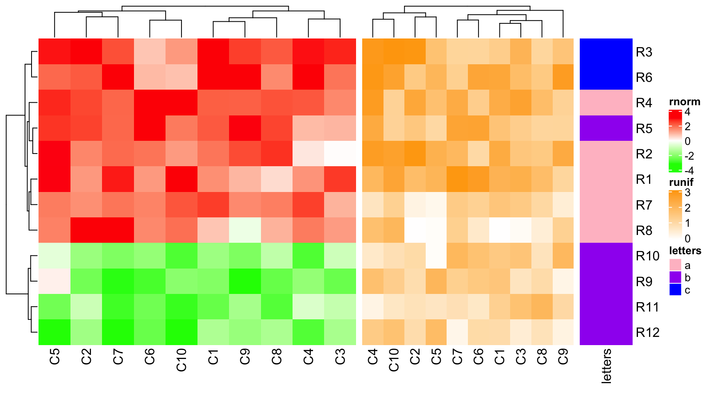
ht_list = ht2 + ht1 + ht3
draw(ht_list, main_heatmap = "rnorm", row_dend_side = "right", row_sub_title_side = "left")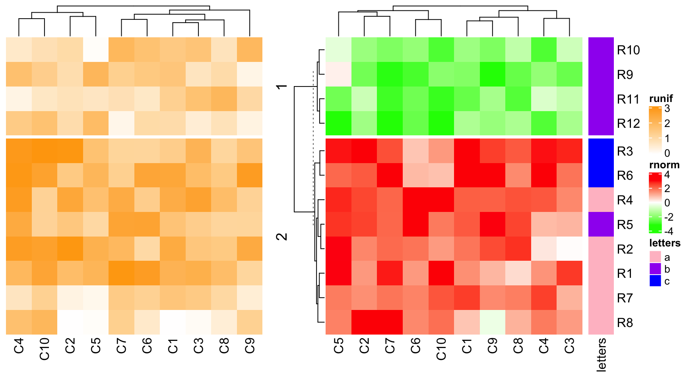
If there is no row clustering in the main heatmap, all other heatmaps have no row clustering neither.
ht1 = Heatmap(mat1, name = "rnorm", col = col_rnorm, cluster_rows = FALSE)
ht2 = Heatmap(mat2, name = "runif", col = col_runif)
ht3 = Heatmap(le, name = "letters", col = col_letters)
ht1 + ht2 + ht3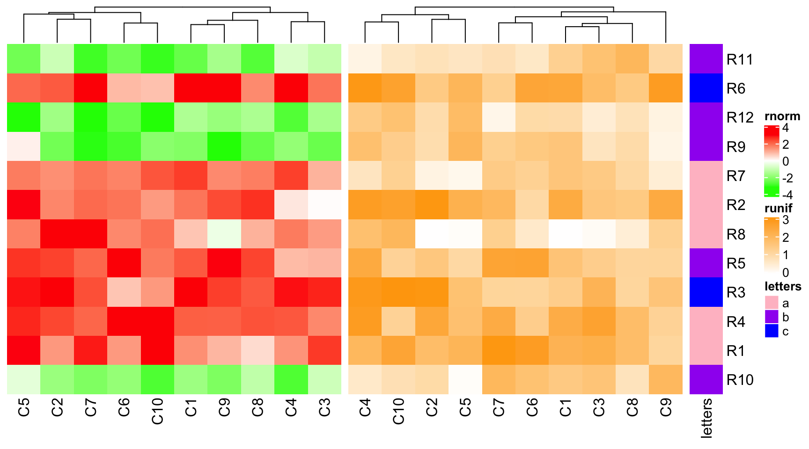
4.5 control row … in draw() function
Since the main heamtap controls the row order of all heatmaps, the parameters which co…
- cluster_rows
- clustering_distance_rows
- clustering_method_rows
- row_dend_width
- show_row_dend
- row_dend_reorder
- row_dend_gp
- row_order
And for splitting rows
- row_gap
- row_km
- row_split
ht1 = Heatmap(mat1, name = "rnorm", col = col_rnorm, row_km = 2)
ht2 = Heatmap(mat2, name = "runif", col = col_runif)
ht3 = Heatmap(le, name = "letters", col = col_letters)
ht_list = ht1 + ht2 + ht3
draw(ht_list, row_km = 1, row_split = le, cluster_rows = FALSE)
4.6 Annotation as components are adjusted
ha1 = HeatmapAnnotation(foo1 = 1:10, annotation_name_side = "left")
ht1 = Heatmap(mat1, name = "rnorm", col = col_rnorm, top_annotation = ha1)
ht2 = Heatmap(mat2, name = "runif", col = col_runif)
ht3 = Heatmap(le, name = "letters", col = col_letters)
ht1 + ht2 + ht3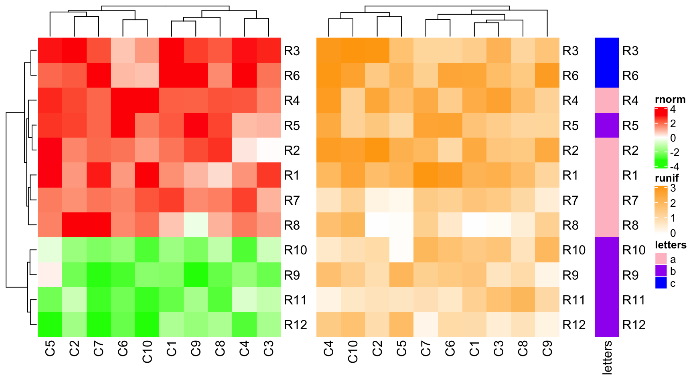
ha1 = HeatmapAnnotation(foo1 = 1:10, bar1 = anno_points(1:10), annotation_name_side = "left")
ha2 = HeatmapAnnotation(bar2 = anno_barplot(1:10))
ht1 = Heatmap(mat1, name = "rnorm", col = col_rnorm, top_annotation = ha1)
ht2 = Heatmap(mat2, name = "runif", col = col_runif, top_annotation = ha2)
ht3 = Heatmap(le, name = "letters", col = col_letters)
ht_list = ht1 + ht2 + ht3
draw(ht_list, ht_gap = unit(c(6, 2), "mm"))
ha1 = HeatmapAnnotation(foo1 = 1:10, annotation_name_side = "left")
ha2 = HeatmapAnnotation(bar2 = anno_barplot(1:10))
ht1 = Heatmap(mat1, name = "rnorm", col = col_rnorm, top_annotation = ha1)
ht2 = Heatmap(mat2, name = "runif", col = col_runif, top_annotation = ha2)
ht3 = Heatmap(le, name = "letters", col = col_letters)
ht_list = ht1 + ht2 + ht3
draw(ht_list, ht_gap = unit(c(6, 2), "mm"))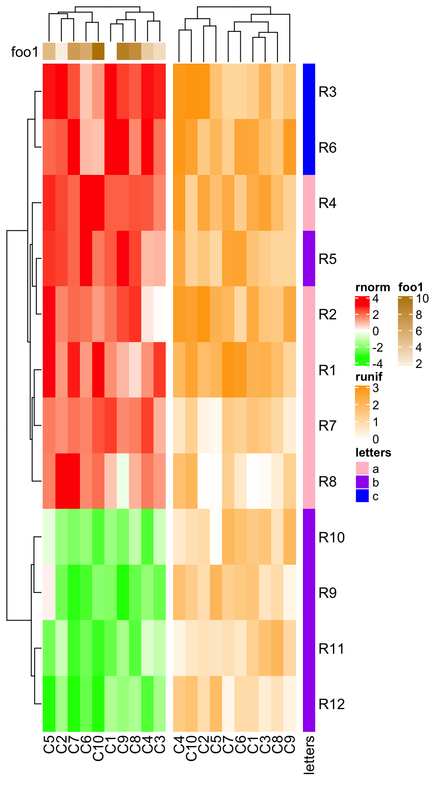
ha1 = HeatmapAnnotation(foo1 = 1:10, bar1 = anno_points(1:10), annotation_name_side = "left")
ht1 = Heatmap(mat1, name = "rnorm", col = col_rnorm, bottom_annotation = ha1)
ht2 = Heatmap(mat2, name = "runif", col = col_runif)
ht3 = Heatmap(le, name = "letters", col = col_letters)
ht_list = ht1 + ht2 + ht3
draw(ht_list)
4.7 concatenate with annotations
For horizontal concatenation with the annotaions.
ha1 = rowAnnotation(foo = 1:12, bar = anno_barplot(1:12, width = unit(4, "cm")))
ht1 = Heatmap(mat1, name = "rnorm", col = col_rnorm, row_km = 2)
ht1 + ha1
Heatmap(mat1, name = "rnorm", col = col_rnorm, row_km = 2) +
rowAnnotation(foo = 1:12) +
rowAnnotation(bar = anno_barplot(1:12, width = unit(4, "cm")))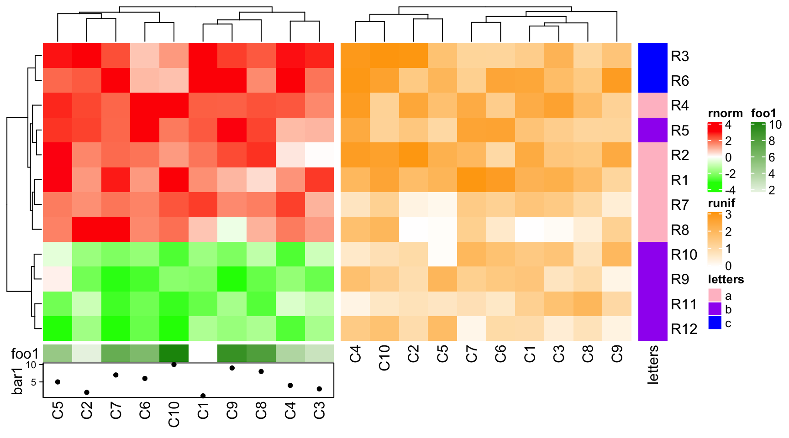
Heatmap(mat1, name = "rnorm", col = col_rnorm, row_km = 2) +
rowAnnotation(foo = 1:12) +
rowAnnotation(bar = anno_barplot(1:12, width = unit(4, "cm"))) +
Heatmap(mat2, name = "runif", col = col_runif)
4.8 Only annotations
rowAnnotation(foo = 1:12) +
rowAnnotation(bar = anno_barplot(1:12, width = unit(4, "cm")))
rowAnnotation(bar = anno_barplot(1:12, width = unit(4, "cm"))) + NULL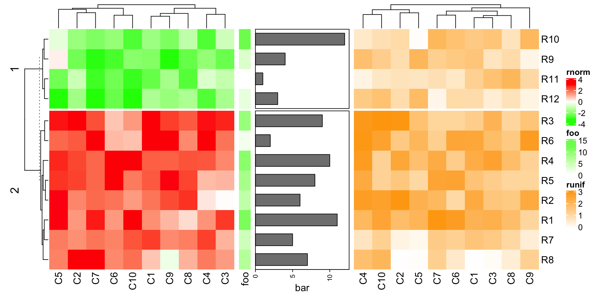
4.9 vertical align
mat1t = t(mat1)
mat2t = t(mat2)
ht1 = Heatmap(mat1t, name = "rnorm", col = col_rnorm)
ht2 = Heatmap(mat2t, name = "runif", col = col_runif)
ht3 = Heatmap(rbind(letters = le), name = "letters", col = col_letters)
ht_list = ht1 %v% ht2 %v% ht3
draw(ht_list)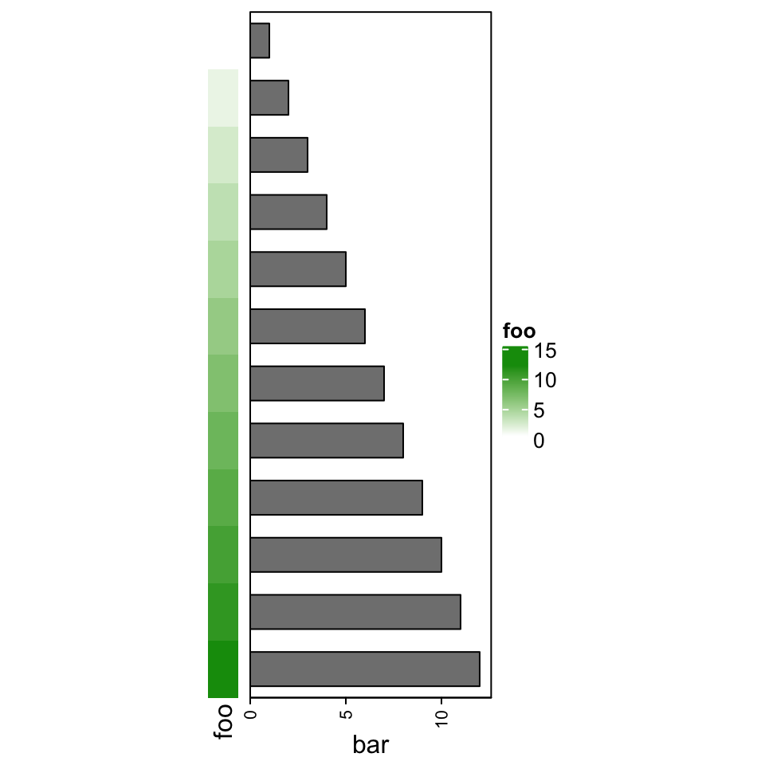
draw(ht_list, column_km = 2)
ht1 = Heatmap(mat1t, name = "rnorm", col = col_rnorm)
ht2 = Heatmap(mat2t, name = "runif", col = col_runif)
ht3 = Heatmap(rbind(letters = le), name = "letters", col = col_letters)
ha = HeatmapAnnotation(foo = anno_barplot(1:12, height = unit(2, "cm")))
ht_list = ht1 %v% ha %v% ht2 %v% ht3
draw(ht_list, column_km = 2)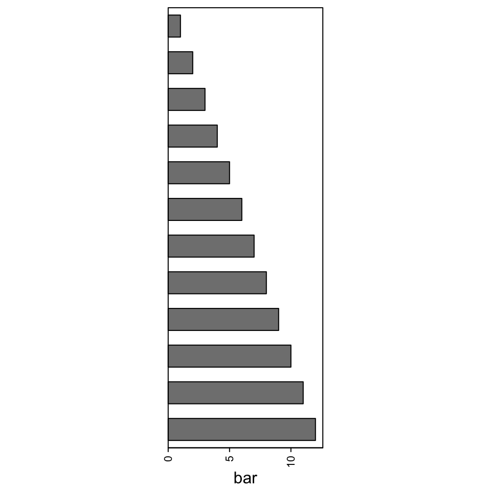
ht1 = Heatmap(mat1t, name = "rnorm", col = col_rnorm, row_km = 2)
ht2 = Heatmap(mat2t, name = "runif", col = col_runif, row_km = 2)
ht3 = Heatmap(rbind(letters = le), name = "letters", col = col_letters)
ha = HeatmapAnnotation(foo = anno_barplot(1:12, height = unit(2, "cm")))
ht_list = ht1 %v% ha %v% ht2 %v% ht3
draw(ht_list, column_km = 2)
4.10 Retrieve orders and dendrograms
row_order, column_order, row_dend and column_dend can be used to retrieve corresponding information from the heatmaps. The usage is straightforward by following example:
ht1 = Heatmap(mat1, name = "rnorm", col = col_rnorm)
ht2 = Heatmap(mat2, name = "runif", col = col_runif)
ht_list = ht1 + ht2
ht_list = draw(ht_list)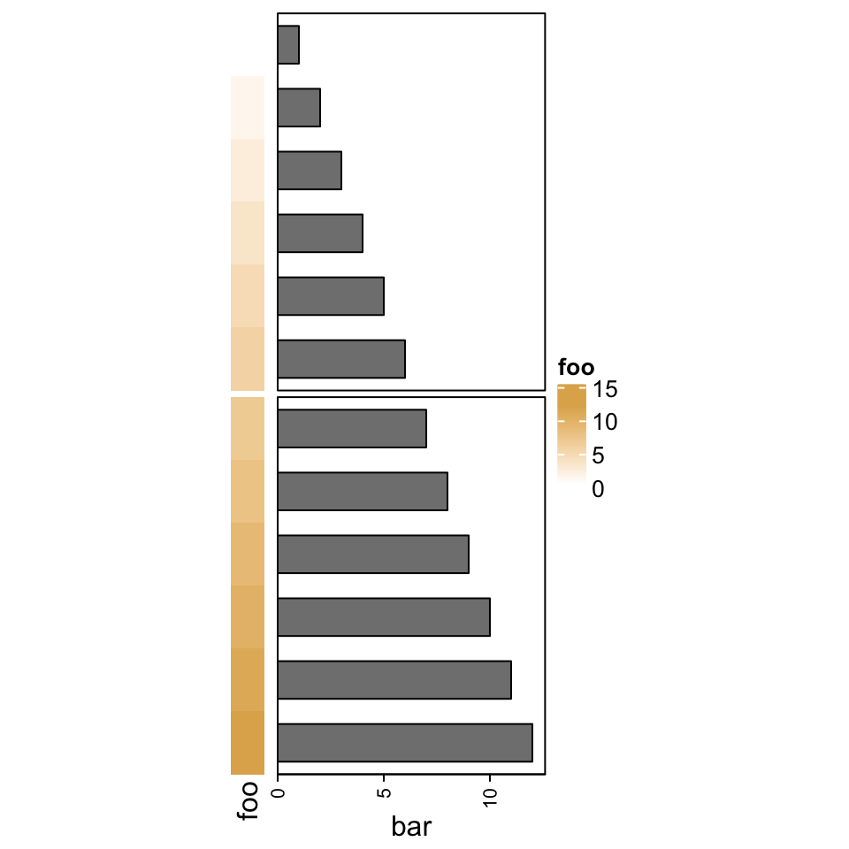
row_order(ht_list)## [1] 9 2 10 8 6 11 5 7 12 4 1 3column_order(ht_list)## $rnorm
## [1] 5 2 7 6 10 1 9 8 4 3
##
## $runif
## [1] 4 10 2 5 7 6 1 3 8 9ht1 = Heatmap(mat1, name = "rnorm", col = col_rnorm)
ht2 = Heatmap(mat2, name = "runif", col = col_runif, column_km = 2)
ht_list = ht1 + ht2
ht_list = draw(ht_list, row_km = 2)
row_order(ht_list)## $`1`
## [1] 12 4 1 3
##
## $`2`
## [1] 9 2 10 8 6 11 5 7column_order(ht_list)## $rnorm
## $rnorm[[1]]
## [1] 5 2 7 6 10 1 9 8 4 3
##
##
## $runif
## $runif$`1`
## [1] 7 6 1 3 8 9
##
## $runif$`2`
## [1] 4 10 2 5Same logic for vertical … which we will not show here
4.11 Change graphic parameters simultaneously
ht_opt() can set graphic parameters for dimension names and titles as global settings.
ht_opt## Option Value
## heatmap_row_names_gp NULL
## heatmap_column_names_gp NULL
## heatmap_row_title_gp NULL
## heatmap_column_title_gp NULL
## legend_title_gp NULL
## legend_title_position NULL
## legend_labels_gp NULL
## legend_grid_height NULL
## legend_grid_width NULL
## legend_border NULL
## heatmap_border NULL
## annotation_border NULL
## fast_hclust FALSE
## show_parent_dend_line TRUE
## verbose FALSE
## show_vp FALSE
## anno_simple_size 5mm
## DENDROGRAM_PADDING 0.5mm
## DIMNAME_PADDING 1mm
## TITLE_PADDING 2.5mm
## COLUMN_ANNO_PADDING 1mm
## ROW_ANNO_PADDING 1mmht_opt(heatmap_column_names_gp = gpar(fontface = "italic"),
heatmap_column_title_gp = gpar(fontsize = 10),
legend_border = "black",
heatmap_border = TRUE,
annotation_border = TRUE
)
ht1 = Heatmap(mat1, name = "ht1", column_title = "Heatmap 1",
top_annotation = HeatmapAnnotation(foo = 1:10))
ht2 = Heatmap(mat2, name = "ht2", column_title = "Heatmap 2",
top_annotation = HeatmapAnnotation(bar = 1:10))
ht1 + ht2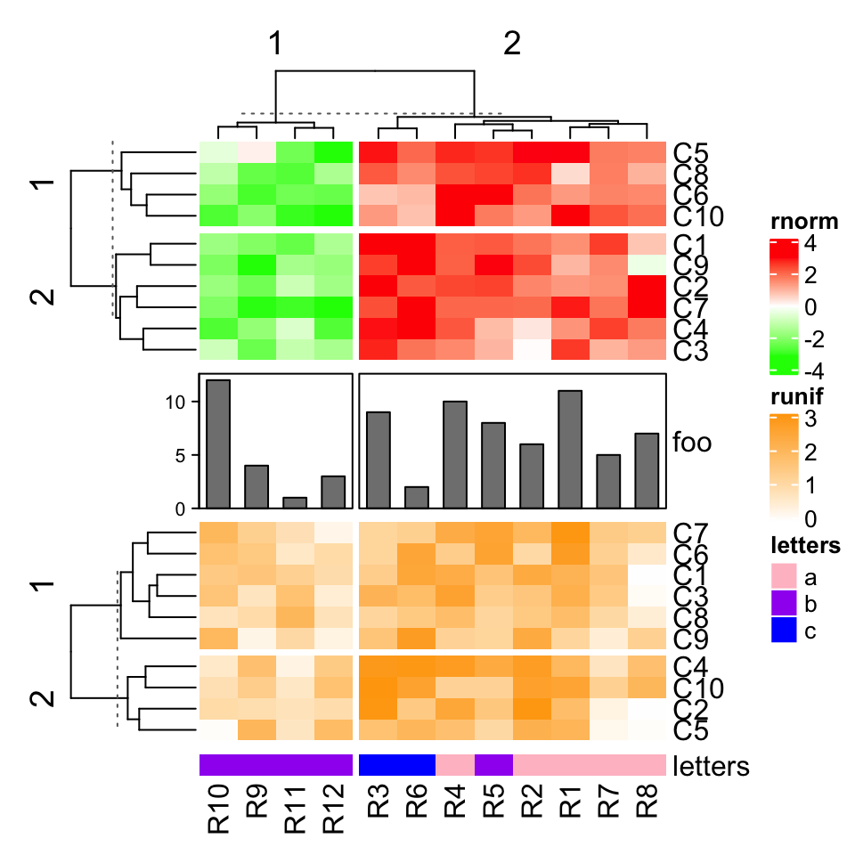
ht_opt(RESET = TRUE)Following are global settings supported by ht_global_opt(). By this function, you can also control settings for the legends.
4.12 Adjust white space caused by annotations
m = matrix(rnorm(100), 10)
ht = Heatmap(m,
top_annotation = HeatmapAnnotation(foo = anno_points(1:10)),
show_row_dend = FALSE)
draw(ht, row_title = "fooooooooooo", column_title = "adjust_annotation_extension = FALSE")
draw(ht, row_title = "fooooooooooo", adjust_annotation_extension = TRUE,
column_title = "adjust_annotation_extension = TRUE")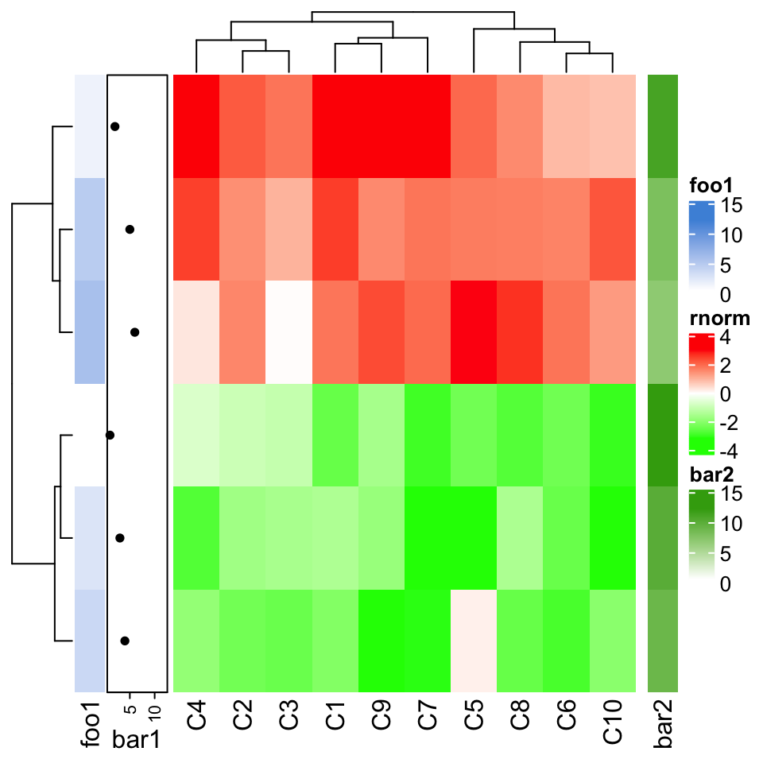
ht = Heatmap(m,
top_annotation = HeatmapAnnotation(foo = anno_points(1:10)),
show_row_dend = FALSE)
draw(ht, row_title = "fooooooooooo", adjust_annotation_extension = TRUE,
column_title = "adjust_annotation_extension = TRUE")